長野市周辺に存在する謎の、そして濃ゆい習俗、
赤地蔵。
その正体を見極めるべく、目下ウロウロしている最中です。小嶋です。
善光寺周辺、長野市街の東部～北部を巡り、お次は長野市街西部～南部へと移動する。
まずは長野市街の西へ、行ってみよう。
訪れたのは善光寺の西、約1キロにある
延命赤地蔵尊。
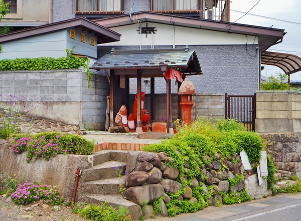
道より少し高いところにある。
遠目に見ても
全部真っ赤っかで目立つ。
燈籠まで赤く塗られている。
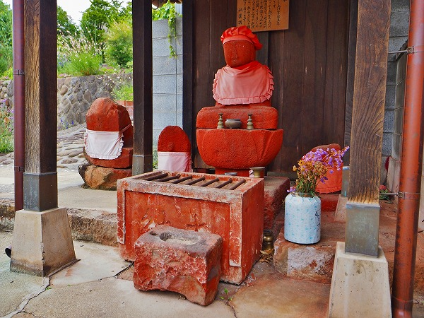
中央の地蔵、左右の石碑や石仏、ついでに賽銭箱や香炉まで赤く塗られている。
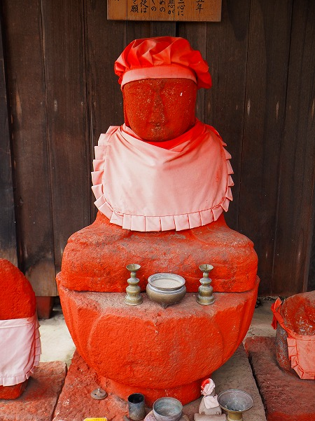
延命地蔵尊。
享保5年建立。
長野に疫病が流行った際に病気を防いだという逸話が記されていた。
なお夏には地蔵盆が行われているという。
西へ西へと移動する。
お次は
地蔵平という場所。
この辺りに来ると標高もだいぶ高くなり、市内とは言え長野市街が眼下に一望出来るようになる。
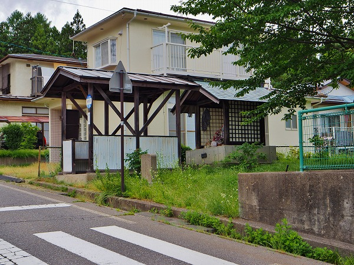
そんな地蔵平の地蔵堂。お堂の前に拝殿があるのか？
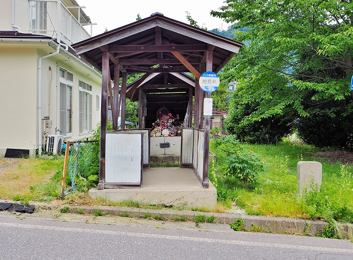
…と思ったら、拝殿ではなくて
バスの待合所でした。
ややこしいいなあ。
手前の道の角度からそれなりの坂であることがお判りいただけるかと思う。
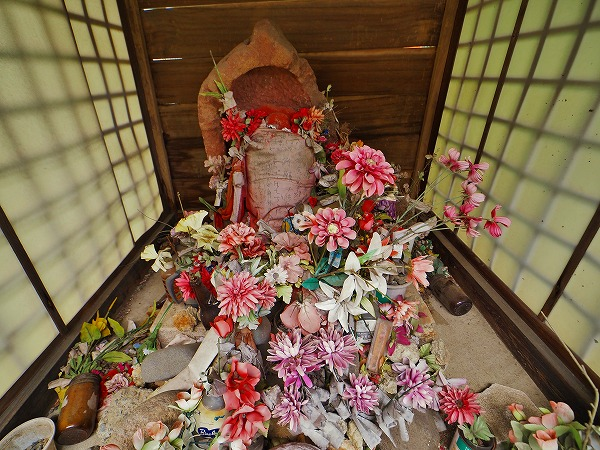
地蔵堂の内部。
大量の造花が供えられている。
枯れた花よりはマシだが、色褪せた造花というのも何とも寂しい感じが醸し出ちゃってるなあ。
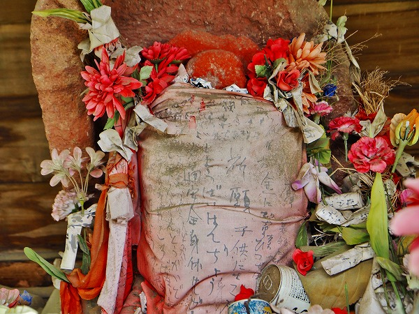
お地蔵さんは赤く塗られているものの、布で覆われてその全身は伺い知ることは出来ない。
布があちこちカビており、しかも
平仮名が多い独特の文体ゆえ判読が難しいのだが、金、祈願、子供、交通安全、身体、という文字が見て取れる。
意味は判らないが、真剣な祈りが込められているのだけは感じられた。
次は
安茂里の地蔵。
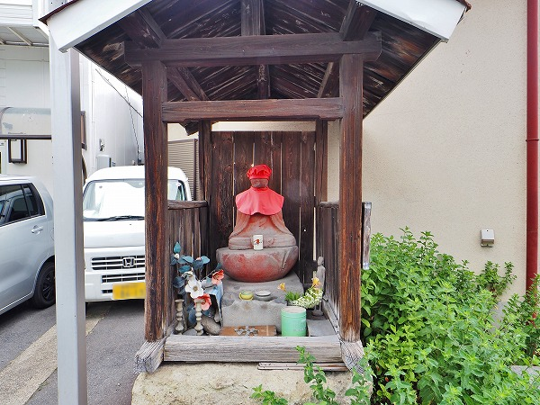
公民館の横にある変形T字路に面している。
ここもまた蓮華座ごと赤く塗られている。
そして赤い帽子と前掛け。
赤い帽子と前掛けは日本中で見られるごくごく普通の現象だ。
普通過ぎてその意味すら考えたこともないほど日常の風景に埋没している。
先にも述べたが赤という色には厄除けや魔除け、疱瘡除けの意味が込められている。
還暦のちゃんちゃんこ、赤鳥居、幼児の額に塗る朱、おびんずるさま、くくり猿、仁王様…
みな
赤い、ということに意味があるのだ。
とすれば長野の赤地蔵もこれらの例と同様に、厄除け魔除け疱瘡除けの意味が込められていると考えるのが自然だろう。
ただし、何故長野だけ地蔵を赤く塗るのか？という問題は依然残り続けるわけだが。
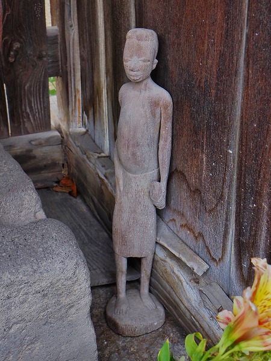
赤地蔵の傍らには謎の像が立っていた。
アフリカか南洋の彫像だろうか。
少し西に移動。
同じく
安茂里の地蔵堂。
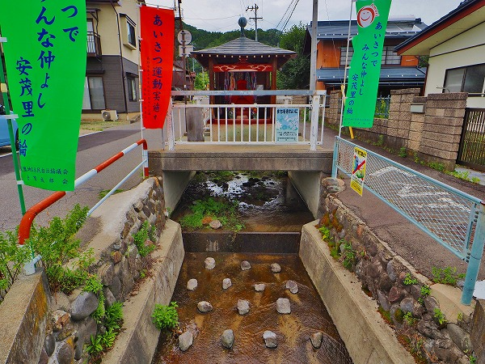
この地蔵堂の特徴は
川の上に建っていること。
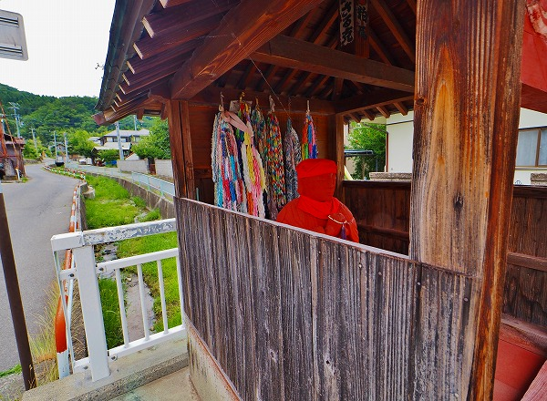
用水のような小さな川の上にいるお地蔵さん。
一体どんな経緯があったのか？
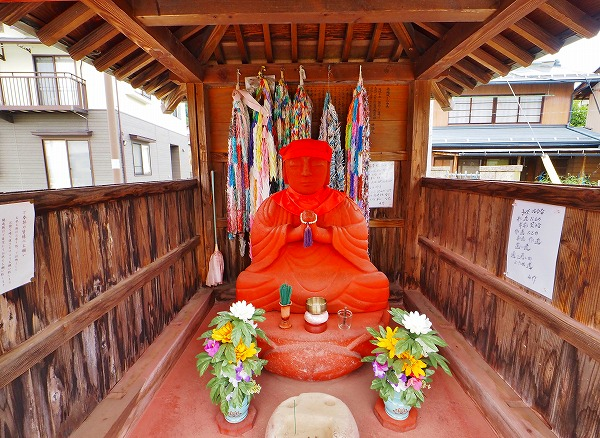
説明書きによれば…
建立は天保10年、明治21年に鉄道の敷設にあたって地区の有力者の自宅に移転したが…
スミマセン！説明書きが延々と書かれているんですけどその前に千羽鶴が大量にぶら下がっているので全然読めませんでした！
で、次は塩生の
芝峯六地蔵。
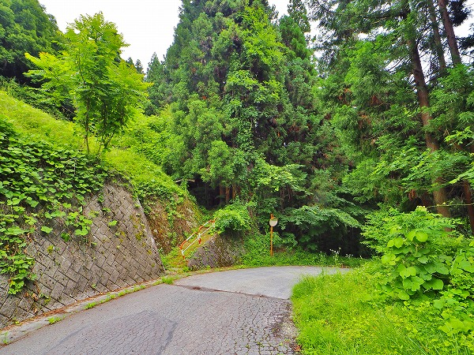
山間部の見落としそうな坂道を登っていく。
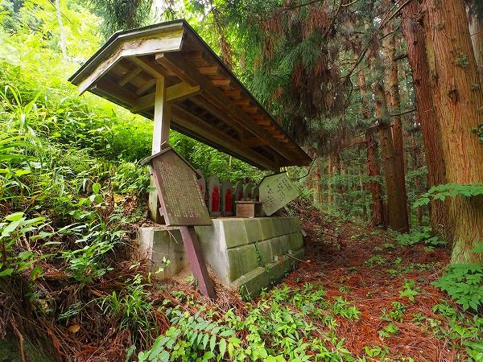
山道の途中に赤い六地蔵が並んでいた。
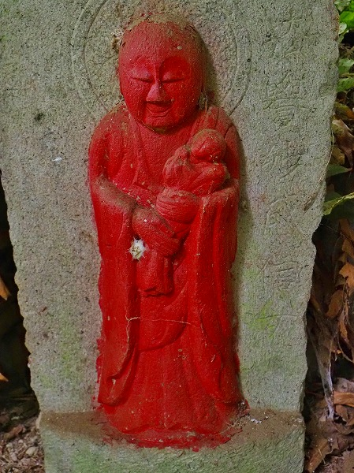
今回
赤い六地蔵はあまり見なかった。
むしろ赤い地蔵がある割には隣の六地蔵は塗られていない、というケースが多かった印象なので、六地蔵だけが赤い、というのは初めてなのでは。
言い伝えによるとこの近くに鉱泉宿があったのだが、地滑りで宿泊客や経営者が生き埋めになったという。
それらの供養のために六地蔵を建立したのだという。
ここでは一般的な六地蔵ではなく、宿泊客の4人と経営者夫婦の2人、の6人の菩提を弔うための六地蔵であると推測される。
つまり六地蔵とは言えある意味特殊な六地蔵ともいえる。
お次は長野市篠ノ井
小松原の赤地蔵。
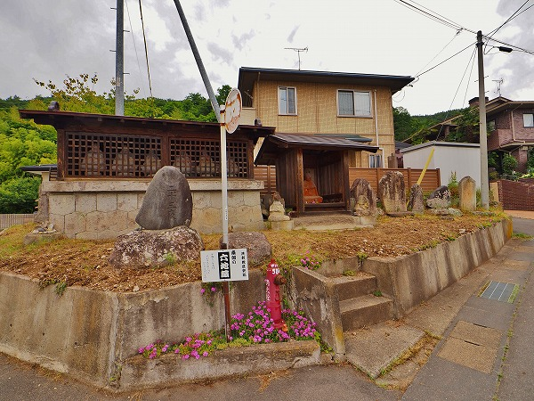
六地蔵と赤地蔵、そして様々な石碑や石像が混在する賑やかなところだ。
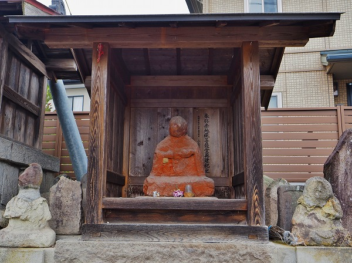
赤地蔵。
段々見慣れてきたが、やはりべったり塗られている。
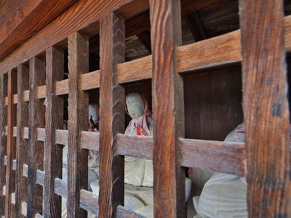
隣にある六地蔵は彩色が成されていない。
特別な理由がないかぎり、やはり六地蔵は塗られる対象とはなっていないようだ。
こちらは
切勝寺の六地蔵。
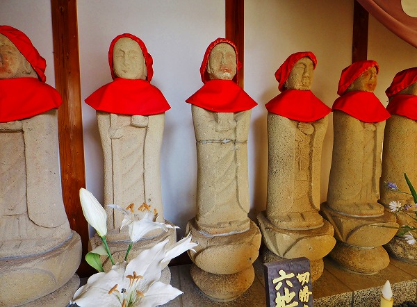
路傍の地蔵ではなく寺院の境内にあるお地蔵さんだ。
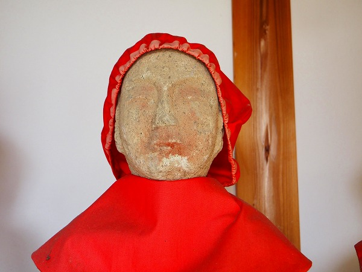
見ればうっすら赤い。
ここの六地蔵は赤地蔵が隣にあるわけではない、独立した六地蔵だが、かつては着彩されていた。
うむー。
「六地蔵＝塗られない」説は成立しないのかー。
次は
善導寺。
長野市街の5キロほど南に位置している浄土宗の寺院だ。
川中島の合戦跡にもほど近い場所で、川中島の合戦の際には被災したという。
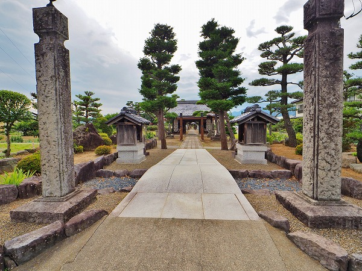
参道の両脇に祠がある。
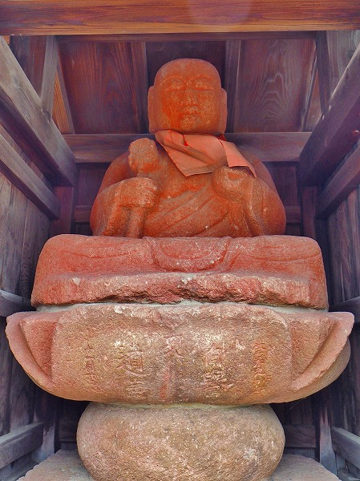
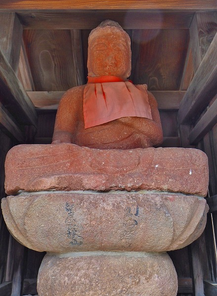
その中に赤地蔵が向かい合うように鎮座している。
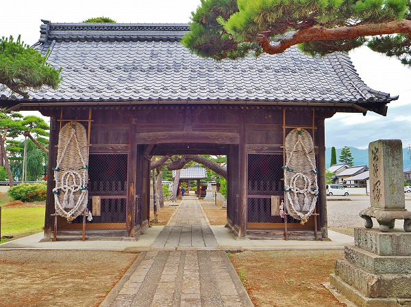
山門には巨大なわらじが奉納されていた。
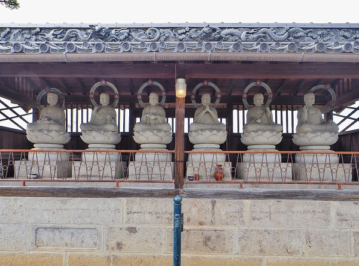
六地蔵。
ここの六地蔵は彩色されていなかった。
ラストは長野市
丹波島の赤地蔵。
長野市街の南を流れる犀川のすぐ近くにある住宅街の一画にある。
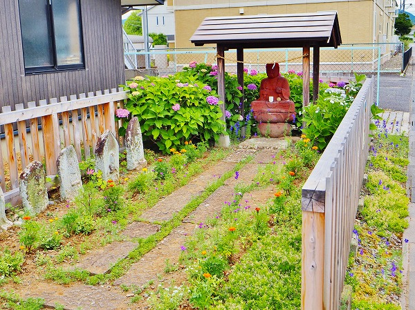
本当に住宅の庭先のようなところにある。
塀や屋根も造った人のDIY感が溢れていて微笑ましい。
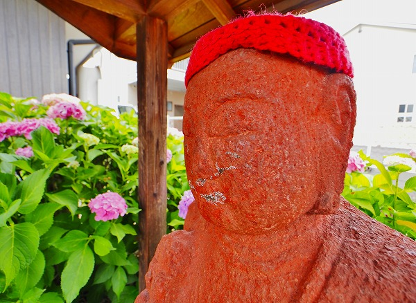
で、赤地蔵。
キッチリ彩色＆赤い帽子。
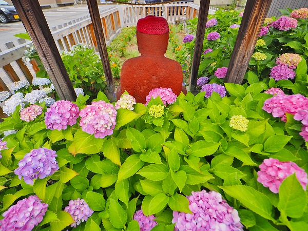
時節柄紫陽花の花に囲まれて
幸せそうな佇まいであった。
これで赤地蔵めぐりはおしまい。
ここでは26か所の赤地蔵を紹介したが、実施にはもう少し訪れている。
今回長野の赤地蔵を巡ってみて、赤い地蔵、という強烈な現象に最初は驚いたが、見ている内にそれ以外はごくごく普通の地蔵信仰なのだな、と思った。
お寺の本堂の真ん中に鎮座する仏像とは違った日々の鬱憤や細かい悩みを聞いてくれる身近な路傍のお地蔵さん。
だからこそ人々は躊躇なくその像を赤く塗ることも出来るのだ。
そして赤地蔵の周辺の石仏や六地蔵を塗ったり塗らなかったりする問題。
これも結局その
地域の事情、としか言いようがないようだ。
たまたま誰かが勢い余って他の石像も塗ってしまったところもあれば、そうでないところもある。
そんな緩さが民間信仰の大らかさであり、面白い所なのではなかろうか。
そしてもうひとつ、そもそも何故地蔵を赤く塗るのか問題。
これは想像なのだが、長野県内には双体道祖神が数多く存在する。
その中には彩色されているものが結構多いのだ。
もしかしたらその影響なのかも知れない。
いや、逆に赤地蔵の影響から道祖神に色を塗るようになったのかも知れないので断言は出来ないのだが、何らかの関連性はあってもおかしくはないのかな、と
考えてみれば我が国の地蔵信仰は極めてユニークだ。
味噌を塗ったり、塩をかけたり、縄で縛ったり、挙句の果てには燃やしたり、川に投げたり。
地蔵信仰とは
庶民信仰の剥き出しの信仰形態であり、それは他のホトケにはない身近な関係性によって成立している信仰なのだ。
おしまい